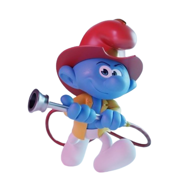
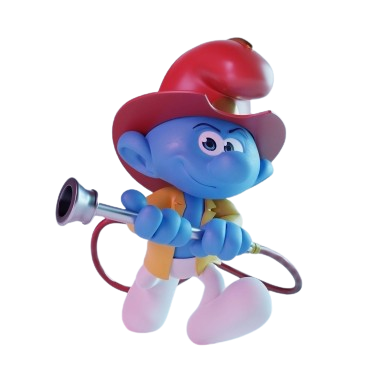
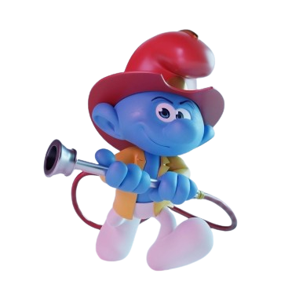
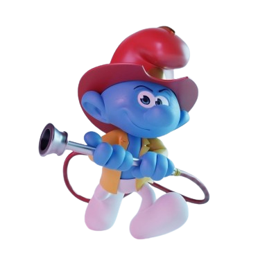

Fireman Smurf is a character that appears a few times in the Smurf . As he is named, he is the Smurf Village's chief in firefighting and leads a brigade of firefighters to put out fires in the village.. He has three huts, one in the main village, the island and mountain regions, but a player has to purchase his hut in the main village before buying the other ones in the other regions.